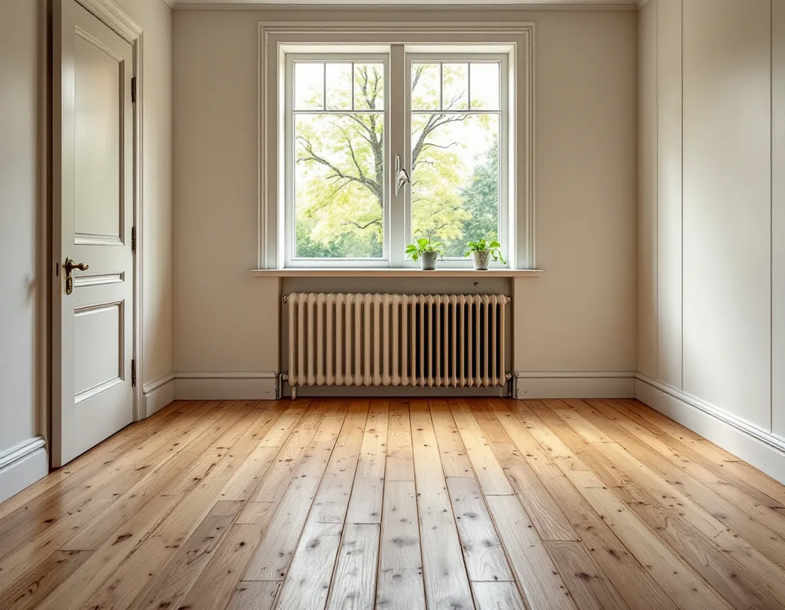
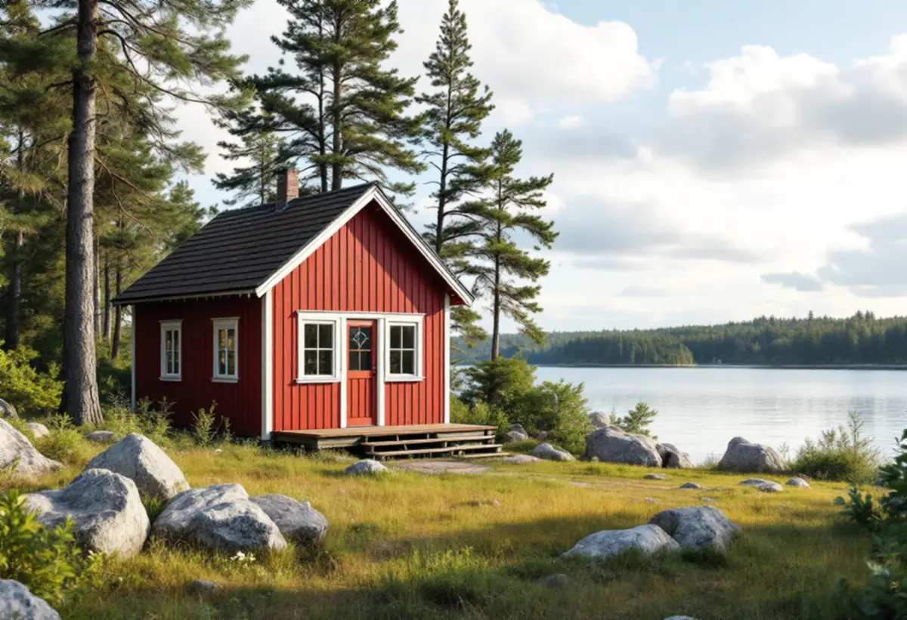

Platsbesök
Vi tittar på golvet, provar svikten och ser om det ligger på trä eller betong.
Haninge har egnahem längs Nynäsbanan, sportstugor nära vattnet och fritidshus som håller på att bli villor. Golven i husen har legat olika länge och på olika underlag. Geal Entreprenad AB lägger nya golv, slipar gamla och rättar till underlaget i hela Haninge, med gratis platsbesök och skriftligt kostnadsförslag.

Haninges karaktärsmiljöer, en del av kommunens kulturmiljöprogram, beskriver hur småhusen främst växte fram längs Nynäsbanan, som invigdes 1901. Särskilt för Haninge är Tungelsta, där AB Egna hem köpte upp flera stora gårdar och styckade dem för att sälja till arbetarklassen. Villkoret var att köparen drev ett småbruk med jordbruk eller växthus, och Tungelsta blev ett centrum för handelsträdgårdar.
Egnahemsområdena från 1910–1940-talen finns i Tungelsta, Vendelsö, Vendelsömalm, Handen, Västerhaninge och Norrby. De första villorna präglas av jugend och nationalromantik, som senare övergick i nyklassicism och tidig funkis, och tongivande är träpanel, enkelt spröjsade fönster och tegeltäckta sadel- eller brutna tak.

I ett hus som har haft samma golv i hundra år har brädorna ofta slitits ojämnt, med nötta stråk vid dörrar och spis och mindre slitna ytor under möblerna. Det betyder inte att golvet är slut. Med en försiktig grundslipning, några utbytta brädor och en ny yta kan det se nästan nytt ut utan att tappa sin ålder.
Har golvet målats eller fått en matta limmad direkt på brädorna krävs mer förarbete. Vi prövar på en liten yta hur färgen eller limmet släpper innan vi lovar något om resultatet, och skriver in förarbetet som en egen post i kostnadsförslaget.
Ett egnahem som har byggts till i omgångar har ofta rum på olika höjd, där köket eller en senare tillbyggnad ligger något högre än hallen. Vi mäter nivåerna i hela planet innan vi väljer golv, så att övergångarna blir få och hamnar vid dörröppningar i stället för mitt i ett rum. Det gör också att dörrarna inte behöver kapas mer än nödvändigt.
Karaktärsmiljöerna pekar ut sportstugorna från 1920–1950-talen som små och enkla volymer i naturen, ofta med röda fasader och vita knutar. Exempel är Årsta havsbad, Vendelsö, Hermanstorp, Norrby och skärgården. Fritidshusområdena från andra halvan av 1900-talet byggdes mer rationellt, ofta med prefabricerade byggsatser och stugor i liknande utförande.
Att husen i ett sådant område är byggda på samma sätt gör det lättare att förutse vad som finns under golvet. Men små stugor har ofta tunna bjälklag och golv som ligger tätt mot marken. Vi tittar på svikt och fukt innan vi föreslår ett tyngre golv, och väljer gärna ett lättare golv om underlaget inte är byggt för mer.
I omvandlingsområden som Hermanstorp, Norrby och Kolartorp börjar sommarstugorna permanentas. Kommunens råd är att ett befintligt fritidshus med fördel kan sparas som en extra lägenhet om en ny huvudbyggnad uppförs på tomten. Då får stugan ett nytt liv, och golvet behöver klara mer än en sommar i taget.
Ett golv i en gäststuga eller extra bostad ska tåla vardag men inte nödvändigtvis se ut som i huvudbyggnaden. Ett slipat och oljat brädgolv kan ofta behållas. Är golvet för skadat lägger vi ett nytt som passar stugans skala, och ser till att övergången mot våtrum och entré blir tät och tålig.
För nya hus i omvandlingsområdena råder kommunen att större nivåskillnader på tomten tas upp med förhöjd sockel, souterräng- eller källarvåning. Det innebär att många hus har ett nedre plan som delvis ligger mot marken, ofta med golv på betong.
Golvbranschen rekommenderar att fukten i bjälklaget kontrolleras innan avjämningsmassa läggs, så att den inte överstiger vad ytskiktet tål. Vi ser till att mätningen görs i god tid och väljer golv efter resultatet. Våtrum i nedre planet hör till badrumsrenoveringen. Mer om golvtyper finns på sidan om golvläggning.
Vi tittar på golvet, provar svikten och ser om det ligger på trä eller betong.
På ett gammalt golv provar vi slipning eller borttagning av färg och lim på en liten yta.
Du får ett skriftligt förslag där förarbete, golv och fuktmätning står var för sig.
Gamla mattor och lim tas bort, brädor lagas och underlaget riktas.
Golvet slipas och behandlas eller ett nytt läggs, med trösklar och lister anpassade.
Vi går igenom golvet med dig och lämnar skötselråd.
Golvläggning och golvslipning ger rotavdrag i småhus och fritidshus som du äger och använder. Avdraget är 30 procent av arbetskostnaden, högst 50 000 kr per person och år och högst 75 000 kr tillsammans med rutavdrag.
Material och resor ingår inte. Vi drar avdraget direkt på fakturan.
Hur mycket förarbete golvet kräver, om brädor behöver bytas och om underlaget ligger på trä eller betong styr mest. I nedre plan tillkommer fuktmätning och avjämning. Platsbesöket är gratis och du får ett skriftligt kostnadsförslag.
Parkett, trägolv, klinker och slipning.
Golvläggning i Stockholm →Takbyte, takbesiktning och plåtarbeten.
Takläggare i Haninge →Dalarö, Vendelsö och Brandbergen.
Takrenovering i Haninge →Vakuumtoalett, sluten tank och öarna.
Badrumsrenovering i Haninge →Nytt hus och tillbyggnad i omvandlingsområden.
Byggföretag i Haninge →Tegelvillor, grupphus och panelade gårdar.
Fasadrenovering i Haninge →Egnahem, grupphus och Dalarö.
Köksrenovering i Haninge →Egnahem, grupphus och sommarvillor i Haninge.
Målare i Haninge →Falsad plåt, sjöbodar och beslag i Haninge.
Plåtslagare i Haninge →Verandor, altaner och skärmtak.
Snickare i Haninge →